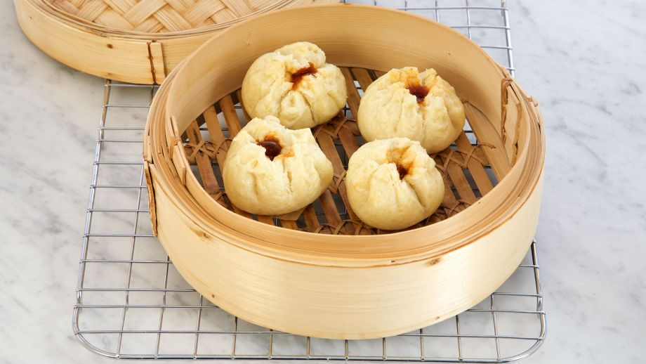
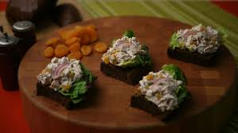

Primeros platos
¡Hola de nuevo!
Aquí encontrarás mis recetas favoritas con las que empezar un almuerzo o una cena ya sea compartida o en solitario.
¡Espero que disfrutes!
¡Atención!
Recuerda que ninguna de estas recetas me pertenece. Esta es una simple copilación de mis recetas favoritas. Encontrarás la fuente de las recetas al final de cada una o haciendo clic en la foto del plato.
- Sopa de tomate
- Gyozas de cerdo
- Bollos de barbacoa al vapor
- Ensalada de pavo al limón

- Dificultad: Fácil
- Tiempo: 45 minutos
- Raciones: 4
| Ingredientes |
Cantidad |
| Tomates maduros |
800 gramos |
| Dientes de ajo |
2 |
| Cebolla mediana |
1/2 |
| Caldo de verduras |
200 ml |
| Zanahoria |
1 |
| Harina de trigo |
1 cuchara sopera |
| Albahaca fresca |
4 hojas |
| Aceite, pimienta y sal |
Al gusto |
Preparación
- Pela y pica muy finita la cebolla y haz lo mismo con los dientes de ajo.
- Pela la zanahoria y córtala también en trocitos pequeños.
- En una olla pon un poco de aceite y sal y echa la cebolla, los ajos y la zanahoria. Deja que se cocine todo junto a fuego medio removiendo de vez en cuando durante unos 5 minutos hasta que se empiecen a dorar. Si se pegan o doran las verduras, baja la temperatura del fuego y échales un poquito de agua.
- Incorpora la harina y mézclala con las verduras durante 1 minuto. Esto ayudará a que la sopa después espese un poco más y cocinando la harina no sabrá cruda.
- Los tomates deben utilizarse sin piel así que puedes optar por varios métodos. El más clásico es hacerles un corte en cruz e introducirlos en agua hirviendo durante 2-3 minutos y después pelarlos y triturarlos. En cambio a mi me gusta lavarlos, triturarlos en una batidora de vaso o robot y después colarlos bien para que no aporten ni pieles ni pepitas.
- En todo caso, te recomiendo colar los tomates una vez triturados para evitar esas pieles y pepitas.
- Incorpora los tomates a la olla junto con 4 o 5 hojas de albahaca picadas, un poco de sal, el azúcar y el caldo de verduras.
- Sube el fuego para que esté alto y cuando la mezcla empiece a hervir baja el fuego para que esté suave y cocina 30 minutos.
- Una vez lista la sopa de tomate, tritúrala y ya la tienes lista. Pruébala por si tienes que rectificarla de sal, y si la quieres más espesa tan solo tienes que echarla de nuevo en el cazo y calentarla hasta que tenga la textura que buscas. Igualmente si ha espesado demasiado siempre puedes añadir un poco de agua para aligerarla.
- Para servirla y decorarla puedes poner unos cubitos de queso feta, fresco o mozzarella, albahaca fresca picada y un chorrito de aceite de oliva.
- Dificultad: Medio
- Tiempo: Bajo
- Raciones: 6
| Ingredientes |
Cantidad |
| Repollo |
450 gramos |
| Ajo picado |
30 gramos |
| Jengibre picado |
30 gramos |
| Carne picada de cerdo |
450 gramos |
| Salsa de soja |
60 ml |
| Ázucar blanco |
1 cucharada |
| Wontons |
1 paquete |
Para la salsa
| Ingredientes |
Cantidad |
| Salsa de soja |
30 ml |
| Vinagre de arroz |
15 ml |
| Aceite de sésamo |
2 ml |
Preparación
- Lavamos y picamos fino 450 g de repollo.
- Pelamos 30 g de ajo y 30 g de jengibre. Una vez listo lo picamos fino y reservamos.
- En un bol, mezclamos 450 g de carne picada de cerdo con 450 g de repollo picado, 30 g de ajo picado y 30 g de jengibre picado. Aderezamos con 60 ml de salsa de soja y 1 cucharada de azúcar blanco.
- Una vez tenemos preparado el relleno iremos formando las gyozas. Para ello, cogemos una lámina de wonton y ponemos en el centro una cucharada de carne, doblamos por la mitad de manera que obtengamos un semicírculo. Humedecemos el borde y sellamos presionando con los dedos todo el contorno. Si lo deseamos podemos plegar el borde de forma decorativa.
- Colocamos las gyozas en una bandeja cubierta con film transparente y las aplastamos suavemente para que queden planas por su base. Esta es una de las características de las gyozas. Cuando tenemos toda la bandeja completa la cubrimos con papel film y la metemos en el congelador. De esta forma las tendremos listas para cuando deseemos cocinarlas.
- Si deseamos cocinarlas en el momento ponemos una sartén a fuego medio en las que nos quepan todas las gyozas en una sola capa. Cubrimos ligeramente el fondo de la sartén con aceite vegetal y disponemos las gyozas apoyadas sobre su base. Doramos 3 minutos sin darles la vuelta. Transcurrido el tiempo incorporamos medio vaso de agua y tapamos para que se cocinen al vapor unos 7 minutos. Destapamos y dejamos que se evapore el líquido.
- Las gyozas pueden acompañarse de una salsa elaborada con 30 ml de salsa de soja, 15 ml de vinagre de arroz y 2 ml de aceite de sésamo

- Dificultad: Medio
- Tiempo: Medio
- Raciones: 4
Para la masa
| Ingredientes |
Cantidad |
| Harina de trigo |
185 gramos |
| Harina panificable |
130 gramos |
| Levadura en polvo |
9 gramos |
| Azúcar blanco |
70 gramos |
| Leche |
90 ml |
| Agua |
45 ml |
| Aceite vegetal |
30 ml |
Para el relleno
| Ingredientes |
Cantidad |
| Carne de res cocida |
200 gramos |
| Ketchup |
60 ml |
| Vinagre de manzana |
30 ml |
| Salsa Hoisin |
15 ml |
| Salsa de soja |
15 ml |
| 5 especias chinas |
3 gramos |
| Jengibre rallado |
Al gusto |
| Azúcar blanco |
25 gramos |
Preparación
- Lo primero que tenemos que hacer es tamizar 185 g de harina de trigo y 130 g de harina panificable. Agregamos 9 g de levadura en polvo y 70 g de azúcar blanco, mezclamos.
- Incorporamos también los ingredientes líquidos, 90 ml de leche, 45 ml de agua, y 30 ml de aceite vegetal. Removemos con una cucharada de madera hasta que la masa esté más dura.
- Enharinamos la encimera y trabajamos sobre ella la masa con las manos. Amasamos estirando la masa y volviéndola a doblar.
- Reservamos la masa durante una hora para que repose y mientras, preparamos el relleno.
- Primero troceamos 200 g de carne de res cocida.
- Luego, preparamos la salsa barbacoa mezclando en un cazo 60 ml de kétchup, 30 ml de vinagre de manzana, 15 ml de salsa hoisin, 15 ml de salsa de soja, 1 cucharadita de 5 especias chinas, un poco de jengibre fresco rallado y 25 g de azúcar blanco.
- Ponemos el cazo a fuego medio y dejamos cocer junto con la carne de res unos minutos para que los sabores se integren.
- Pasado el tiempo de reposo de la masa, la estiramos y cortamos en 8 pociones. Estiramos las pociones hasta que tengan unos 6 mm de grosor.
- Cortamos la masa en círculos de 10 cm de diámetro con un cortapastas.
- Ponemos una cucharada de carne de res en el centro de cada porción. Para cerrar la masa, estiramos los bordes y los plegamos por encime de la carne de res.
- Cubrimos la vaporera con papel vegetal y colocamos 4 bollos en ella. Cuando el agua de la cazuela empiece a hervir, tapamos la vaporera y cocemos los bollos durante 15 minutos. Repetimos el mismo proceso para cocer los otros 4 bollos.
- Servimos y degustamos en caliente.

- Dificultad: Medio
- Tiempo: Medio
- Raciones: 6
Para el pavo
| Ingredientes |
Cantidad |
| Cebolla |
1 |
| Limón |
1 |
| Laurel |
2 hojas |
| Orégano |
2 ramitas |
| Pechugas de pavo |
700 gramos |
Para la ensalada
| Ingredientes |
Cantidad |
| Melocotones deshidratados |
1/2 taza |
| Zumo de limón |
1 cucharada |
| Mayonesa |
1/2 taza |
| Yogur |
1/2 taza |
| Cebolla morada |
1/4 taza |
| Ralladura de limón |
2 cucharaditas |
| Orégano fresco picado |
2 cucharaditas |
| Semillas de amapola |
2 cucharaditas |
| Sal y pimienta |
Al gusto |
| Hojas de lechuga |
- |
Preparación
- En primer lugar, llevamos a ebullición 1,5 litros de agua con 1 cebolla pelada y cortada a la mitad, 1 limón cortado a la mitad 2 hojas de laurel y 2 ramitas de orégano.
- Añadimos 700 g de pechugas de pavo y cocinamos unos 20 minutos sin tapar a fuego bajo, que el agua esté a punto de romper a hervir.
- Pasado este tiempo, sacamos el pavo y dejamos enfriar. Cortamos en cubos de 1 cm.
- Para hacer la ensalada, sumergimos ½ taza de melocotones deshidratados en 30 ml de agua caliente y 1 cucharada de zumo de limón. Dejamos que se absorba el agua.
- Seguidamente, cortamos en juliana 1/4 de taza de cebolla morada.
- Mezclamos ½ taza de mayonesa con ½ taza de yogur, ¼ de taza de cebolla morada, 2 cucharaditas de ralladura de limón, 2 cucharaditas de orégano fresco picado y 2 cucharaditas de semillas de amapola.
- Vertemos la salsa sobre el pavo y los mecolotones, salpimentamos y mezlcamos bien. Refrigeramos hasta servir.
- Servimos nuestra ensalada fresca.
Si tienes cualquier duda puedes contactarme escribiendo un cometario.